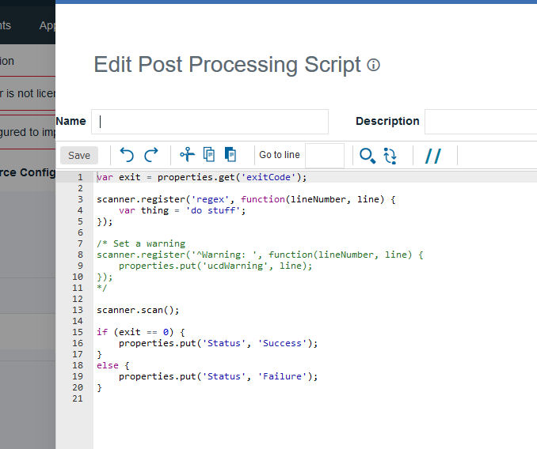

You can store post-processing scripts on the server so
you can reuse them in component processes and in generic processes.
About this task
When a step finishes, the agent runs the post-processing script for that step. When the
agent runs the script, it first loads the server log file. It finds the exit code property of the
target step with regular expressions that are defined in the script. It then applies any actions
that are defined in the script before it runs the next step.The IBM DevOps Deploy (Deploy) server log file is
normally found in the following location:
server_installation_directory/var/log/deployserver.out.
Procedure
-
Click and then click Create Script.
The
Edit Script window opens, as shown in the following
figure.

- Specify a name for the process step.
-
Give a description for the process step.
-
Specify the teams that can access and edit the script.
- Enter or paste the script into the Script Body field.
See the roll-over help next to the field for information about
the properties and variables that are available for user-defined scripts.
Post-processing scripts must set the
Status property
to specify the status of the script. The script can specify any value
for the
Status property. For example, to specify
that the script was a success, run the following command in the post-processing
script:
properties.put("Status","Success");